Что это такое
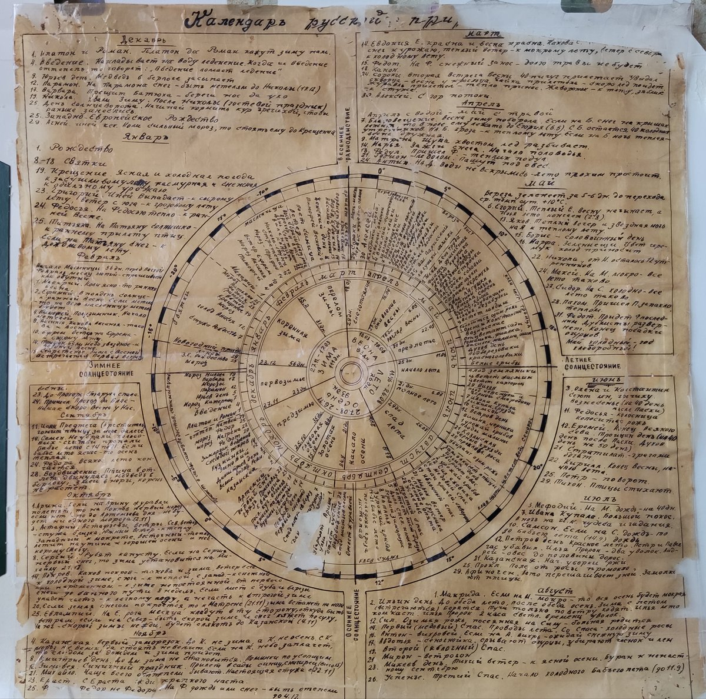
Этот календарь я видел всё своё детство в девяностых и нулевых, он висел в доме у моего дедушки. Большой лист кальки с тщательно выведенной тушью диаграммой: месяцы, сезоны, народные приметы, православные праздники, солнцестояния. Календарь мне очень нравился своим каллиграфическим почерком, множеством деталей и их замысловатой упорядоченностью – я подолгу залипал в него.
Дед сказал, что календарь начертил мой отец. Отец умер от инфаркта в 1990 г., когда мне был один год. Он был инженером-геодезистом, и от него осталось много карт – географических, топографических, многие из которых он начертил своей рукой, так же как и этот необычный плакат.
Со временем календарь на стене у деда совсем истрепался, и я решил сохранить его: забрал себе и заламинировал в прозрачный скотч. Я долго не мог найти ему место: хотел повесить как красивый артефакт и как память об отце, но всё откладывал, и календарь просто пролежал в шкафу несколько лет.
Наконец, в марте 2026 я достал календарь, собравшись сделать для него рамку. Разглядывая его снова, я обратил внимание на пометку внизу «90 4.12.». Если это дата создания календаря 12 апреля 1990 г., то получается, что отец начертил его всего за три месяца до своей смерти (18.07.1990). Интересно, что тогда ему было 36 лет, как и мне сейчас. Да и даты почти совпадают: если учесть, что кропотливая работа над плакатом должна была занять у него какое-то время, то можно предположить, что и он, и я взялись за календарь в один и тот же месяц – в марте. Я крайне скептичен к любой нумерологии и мистике, но осознание такого двойного совпадения просто ошеломило меня. Я решил во что бы то ни стало сохранить этот календарь и попытаться восстановить его в первоначальном виде, отсканировав и дорисовав утраченные части нейронкой. Но потом меня осенило: ведь можно дать календарю вторую жизнь не просто в рамке на стене, а в виде интерактивного сайта, где он будет сохранён навсегда, да ещё и будет использоваться по назначению.
Так начался небольшой исследовательский проект: что это за календарь, откуда он взялся и как его перевести в цифровой вид. Я с удивлением обнаружил, что это не уникальная работа одного человека, а часть целой традиции.
Советский самиздат
Интернет подсказал, что в основе плаката – русский народный календарь-коловрат (круговой календарь), воспроизведение классического «Круга лета» или «Народного месяцеслова».
- Круговая диаграмма с делением на месяцы, сезоны, солнечные циклы, важные для земледельца (солнцестояния, равноденствия)
- По периметру и на полях – народные приметы по дням православных праздников
- Внутренние кольца показывают фенологические фазы (коренная зима, предзимье, предлетье и т.д.)
Также интернет подсказал, что календарь распространился в СССР в 1970–1980-х годах в виде анонимных самиздатовских копий. В интернете нашлось немало фотографий таких календарей на пожелтевшей бумаге: плакат многократно перерисовывали и переписывали от руки и даже печатали на печатной машинке. Получается своего рода советский бестселлер. Один экземпляр даже хранится в Музее «Мемориал» в Москве.
Карточка экспоната museum.memo.ru ↗
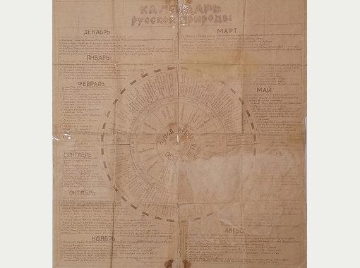
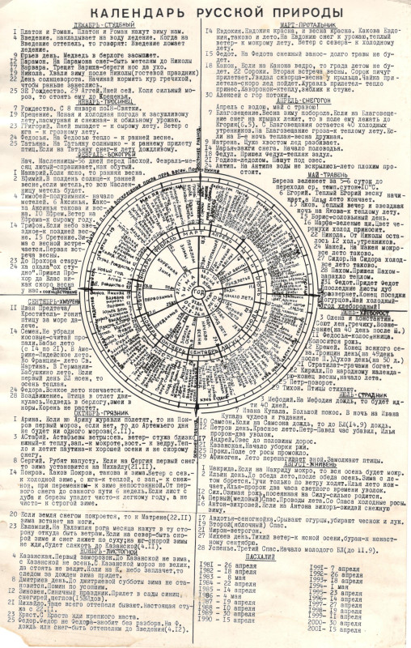
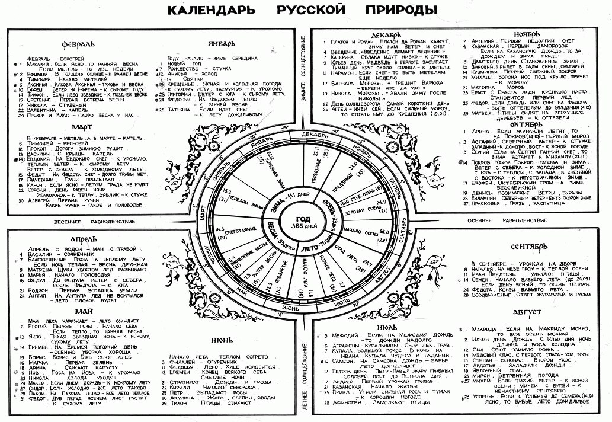
Книга Стрижёва
Текстовой основой диаграммы с высокой вероятностью послужила книга Александра Николаевича Стрижёва «Календарь русской природы» (М.: Московский рабочий, 1972).
Стрижёв (1934–2022) – фенолог, действительный член Географического общества СССР, он создал систему деления года на 14 фенологических подсезонов, привязанных к природным маркерам: снеготаяние, оживление весны, разгар весны, предлетье, начало лета, полное лето, спад лета, начало осени, золотая осень, глубокая осень, предзимье, первозимье, коренная зима, перелом зимы. Именно эта нетривиальная схема присутствует и в книге, и на плакате.
С 1966 по 1982 год Стрижёв вёл рубрики «Народный календарь» и «Русское разнотравье» в журнале «Наука и жизнь», регулярно публикуя народные приметы и фенологические наблюдения. Возможно, плакат непосредственно восходит к этим публикациям Стрижёва, но для этого потребуется проверка физических экземпляров журнала в архивах, поскольку они не оцифрованы в открытом доступе.
Не исключено и другое: круговая диаграмма оказалась просто удачным анонимным проектом, который органично разошёлся в народе через ручное копирование.
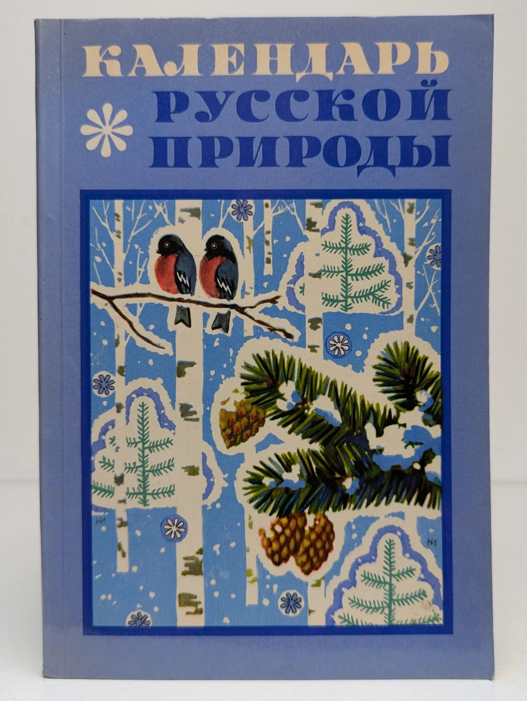
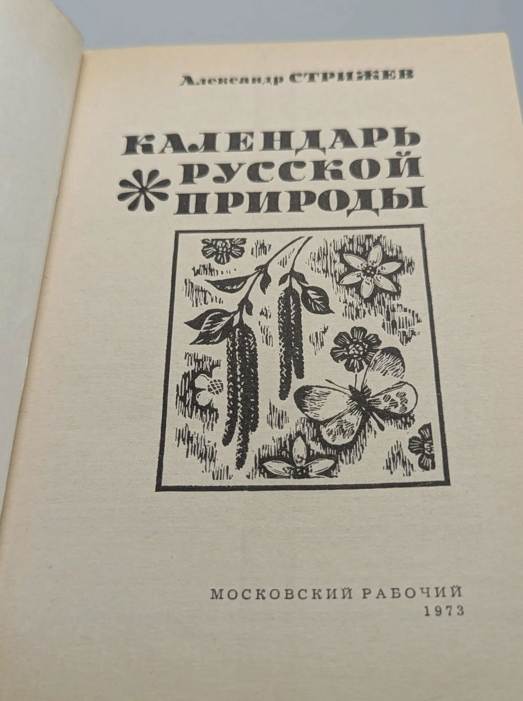
Ранняя традиция
Круговое представление природного года не является изобретением советского самиздата, а само название «Календарь русской природы» появилось задолго до Стрижёва.
В библиотеке Русского географического общества хранятся два издания: «Календарь русской природы на 1916 г.» и «Календарь русской природы. Кн. 1» (1948 г.) – сканы обеих книг доступны полностью в электронной библиотеке РГО: elib.rgo.ru.
Круговых месяцесловов как на плакатах в них нет. Но сами справочники очень любопытные и вполне могли послужить источниками для самого Стрижёва. Календарь 1916 года содержит месяцеслов в табличной форме. А Календарь 1948 года содержит круговую диаграмму климата Московской области, которая очень близка к основе нашего кругового календаря.
Вообще РГО огромный респект за колоссальную работу по оцифровке своих архивов, которая продолжается и сейчас. Можно записаться на экскурсию в их штаб-квартиру в Петербурге и своими глазами увидеть прекрасную научную библиотеку и понаблюдать за работой архивариусов.
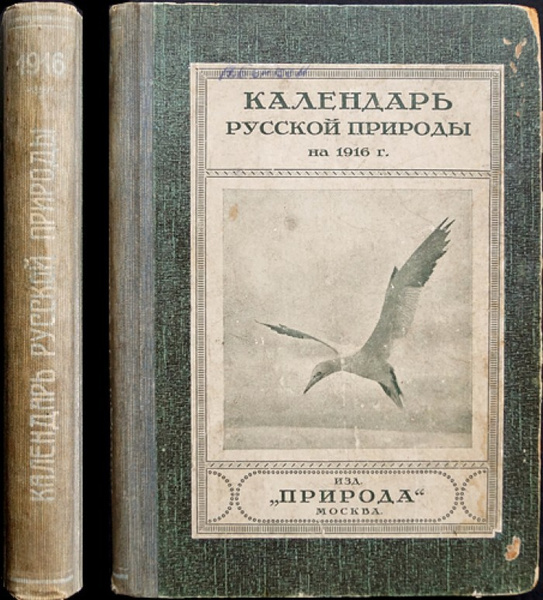
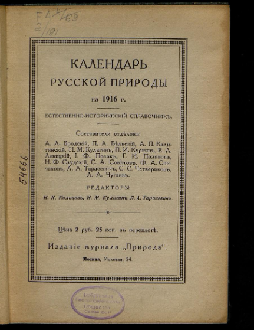
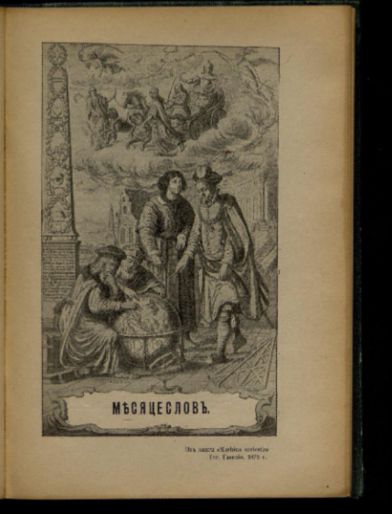
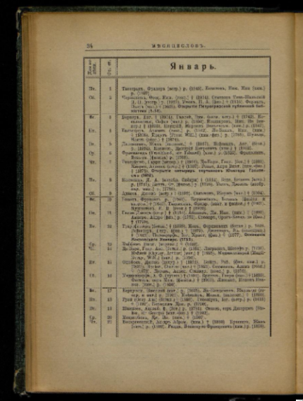
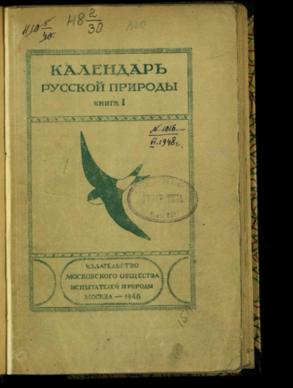
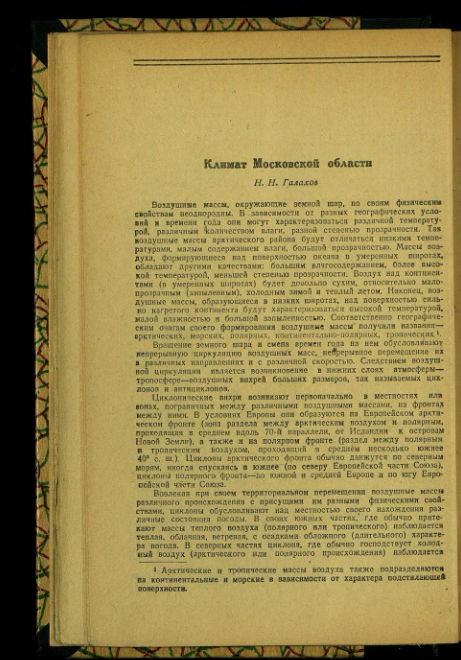
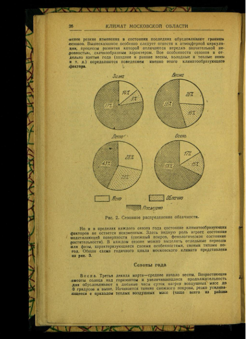
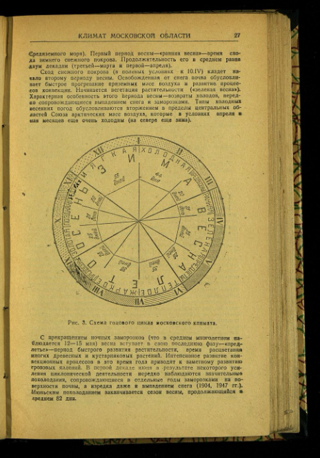
Сама идея кругового представления года уходит в глубокую древность. В русской народной традиции очень примечательны Каргопольские вышивки-месяцесловы из Олонецкой губернии (XIX век) – подлинные круговые земледельческие календари, вышитые тамбурным швом на полотенцах и передниках. Более 500 образцов хранится в Каргопольском краеведческом музее. Круги с крестами обозначают солнечные дни, привязанные к полевым работам, солнцестояниям и равноденствиям. Об этом подробная статья Г.П. Дурасова в журнале «Советская этнография» за 1978 г. (PDF)
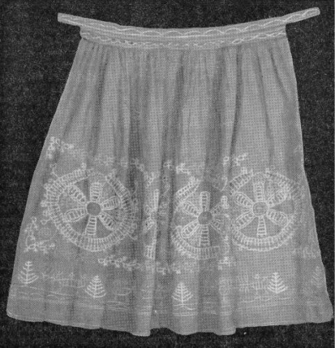
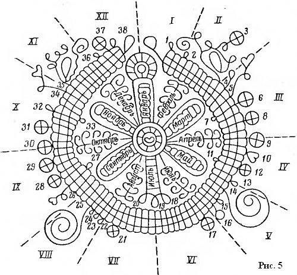
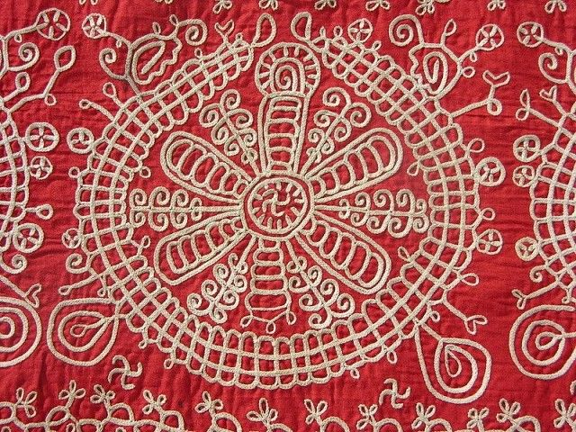
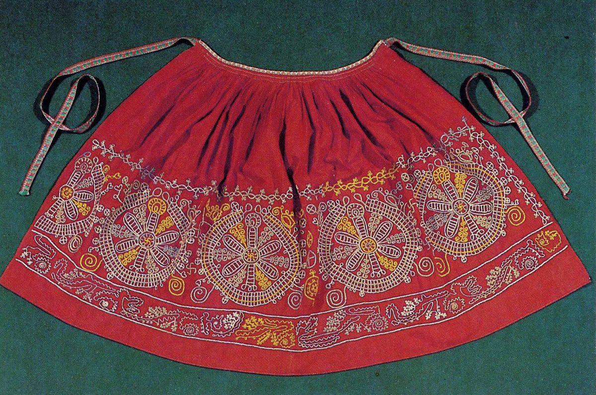
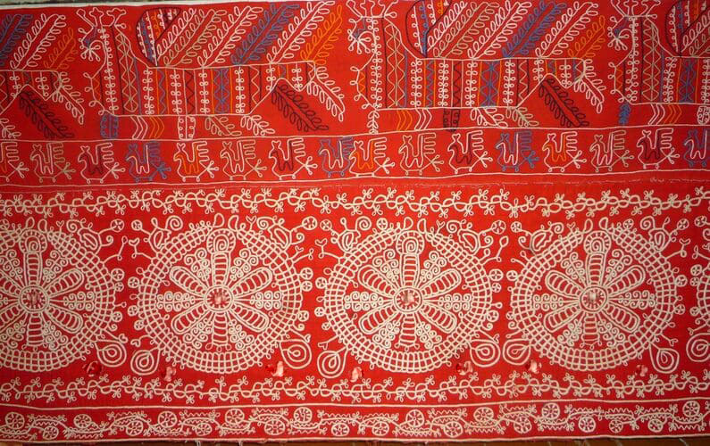
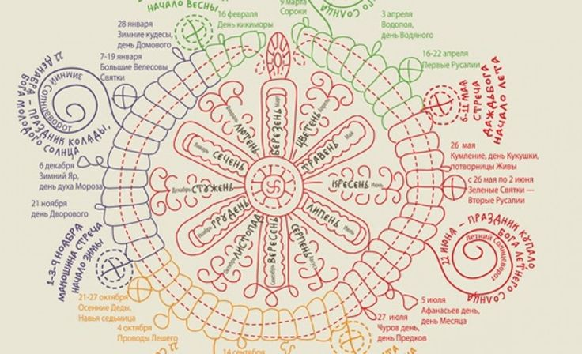
Получается, что круговой календарь природы на Руси существовал веками, а авторы советских плакатов, возможно сами того не осознавая, просто подхватили старую традицию.
Оцифровка
Книга Стрижёва была оцифрована давно – в интернете лежат FB2 и HTML-файлы. Плакаты существуют как фотографии. Один энтузиаст даже заморочился и сделал цифровую реконструкцию календаря в Компасе 3D.

Но всё это не даёт структурированных данных: нет дат, нет разметки, нет разбивки по дням.
Для оцифровки я решил использовать Claude Code. Нужно было вытащить из текста и из фото календарей сотни записей: приметы и фенологические наблюдения, каждую с датой, именем святого и принадлежностью к одному из 14 подсезонов.
Структуру, естественно, я взял из плаката – визуальные кольца с разбивкой по месяцам. Содержание взял из книги Стрижёва, но каждое наблюдение нужно было не просто извлечь, но и привязать к конкретному дню.
Извлечение из книги
FB2 – это XML. Python-скрипт fb2_to_txt.py рекурсивно распаковал его в 12 текстовых глав – по одной на каждый месяц. Дальше в работу вступил Claude Code: четыре агента обрабатывали главы параллельно – весна, лето, осень, зима – и выдавали данные в простом табличном формате:
3.14 | Евдокия | Снег на Евдокию – к урожаю
3.17 | Герасим-грачевник | Грачи прилетели – жди тепла через три недели
3.25 | Благовещение | На Благовещение мороз – под кустом овёсФормат извлечения: месяц.день | имя святого | текст приметы
Плакаты обрабатывались отдельно: Claude читал фотографии и извлекал текст из визуальных колец – тех самых, которые я разглядывал в детстве. Совпадения с книжными данными дедуплицировались, расхождения сравнивались вручную.
Сборка базы данных
Восемь файлов с сырыми данными (четыре для примет, четыре для фенологии) собирались отдельным скриптом, который тоже написал Claude. Главная задача сборщика – назначить каждому дню подсезон по номеру дня в году. Граница «коренной зимы» пересекает Новый год, поэтому проверка не такая тривиальная:
def get_subseason(month, day):
for sid, sm, sd, em, ed in SUBSEASONS:
s_doy = day_of_year(sm, sd)
e_doy = day_of_year(em, ed)
d_doy = day_of_year(month, day)
if s_doy <= e_doy:
if s_doy <= d_doy <= e_doy:
return sid
else: # подсезон пересекает 31 декабря
if d_doy >= s_doy or d_doy <= e_doy:
return sidНазначение одного из 14 фенологических подсезонов по номеру дня в году
На выходе – calendar.json: 177 дней, 445 народных примет, 102 фенологических наблюдения, все с подсезонами и именами святых.
Колесо года
Колесо – это SVG, нарисованный в браузере. 365 дней равномерно распределены по окружности, ноль градусов – весеннее равноденствие, 20 марта, строго наверху (как на плакате). Формула перевода дня года в угол:
function doyToAngle(doy) {
return (doy - 79) / 365 * 360 - 90;
// 79 = номер дня 20 марта
// -90° = положение 12 часов на циферблате
}Колесо состоит из концентрических колец: центр – четыре сезона, следующее – 14 подсезонов Стрижёва, внешнее – месяцы, окрашенные в спектральный градиент от фиолетового января к красному декабрю. Текст подсезонов расставляется посимвольно вдоль дуги, каждый символ повёрнут перпендикулярно радиусу.
На плакатах есть ещё одно, самое широкое, кольцо – фенологические заметки и праздники. Его я ещё не реализовал. Но эти данные не пропали и выводятся во всплывающем окне после выбора определённого сектора колеса.
Поиск
Страница поиска работает целиком на клиенте. Весь calendar.json загружается в память браузера один раз при открытии страницы. Поиск различает три типа запросов:
// "25.12" или "25 декабря" → поиск по дате
// "-10" или "+16" → поиск по температуре (±2 °C)
// всё остальное → полнотекстовый поиск по приметам,
// фенологии и именам святыхВвод обрабатывается с задержкой 200 мс – чтобы не гонять поиск на каждое нажатие. Результаты можно дополнительно фильтровать по подсезонам.
Итог
В результате получилось собрать из книги и графических референсов красивый интерактивный сайт с полноценной базой данных, по которой очень удобно искать любую примету, праздник, дату или даже температуру (не знаю, зачем на практике может понадобиться поиск по температуре, но если есть такая возможность, то пусть будет).
Самым поразительным для меня стало то, что вся работа – от появления идеи сайта до деплоя итоговой версии – заняла всего лишь 2 дня. Я погрузился в Claude Code в пятницу ночью, а уже к вечеру воскресенья у меня был полностью рабочий сайт, в котором я потом лишь незначительно чистил текст и вёрстку. И это при том, что я не знаю ни одного языка программирования и не давал Клоду никаких референсов готовых сайтов, только сами картинки плакатов.
Конечно, это не было волшебством за один промпт. Это была системная работа, когда я чётко представлял в голове архитектуру будущего сайта и последовательно шаг за шагом реализовывал это через довольно подробные и чёткие промпты, с использованием внешних скиллов, таких как superpowers. Я крайне доволен результатом и убеждён, что если бы не ИИ, моя идея по оцифровке календаря так и осталась бы нереализованной.
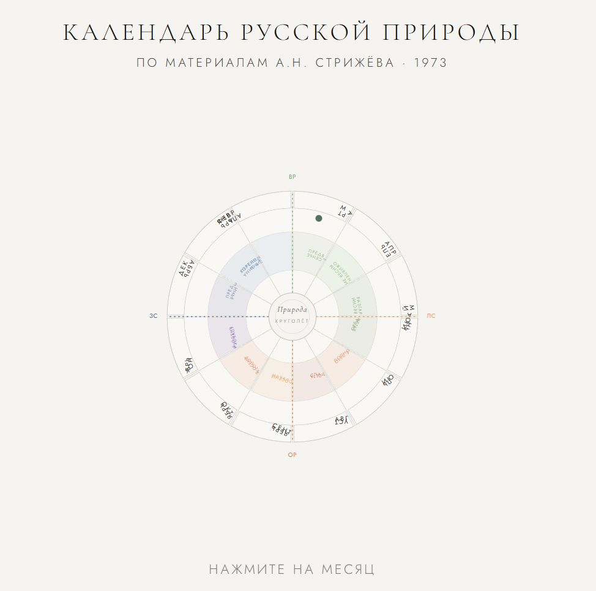
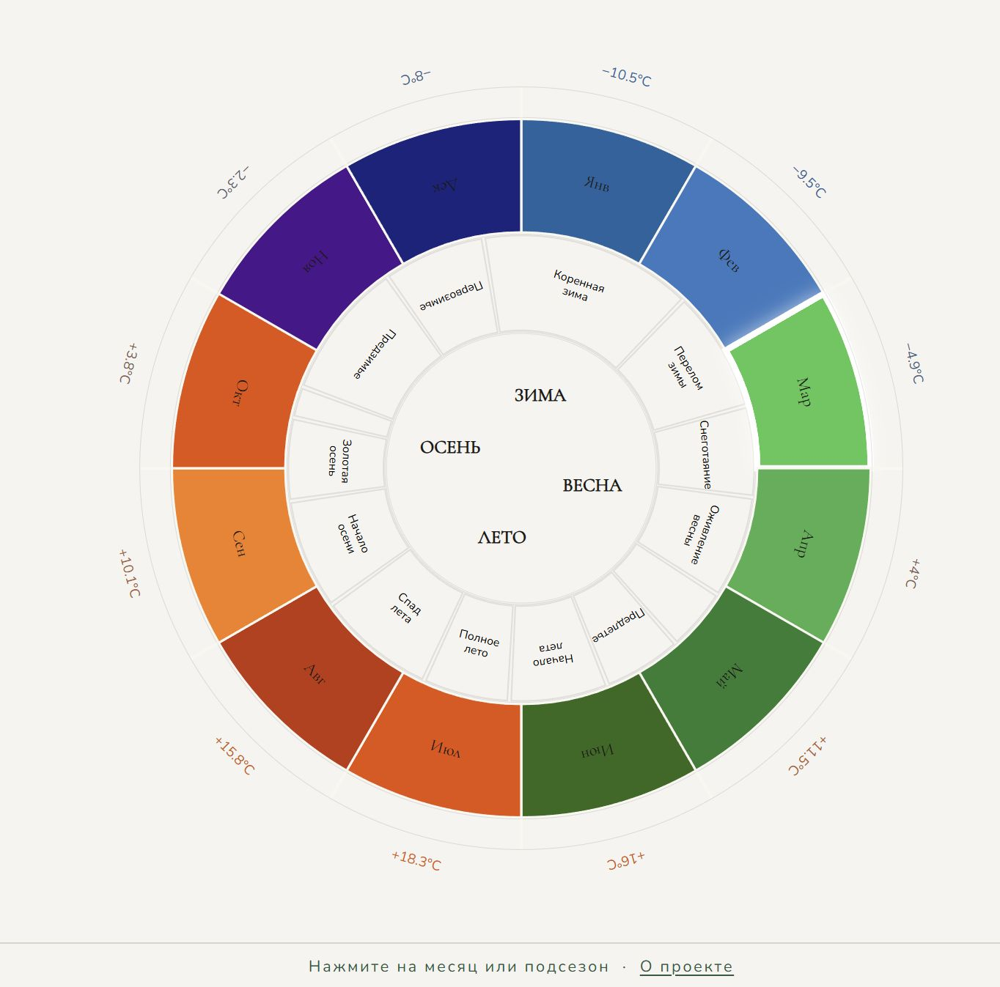
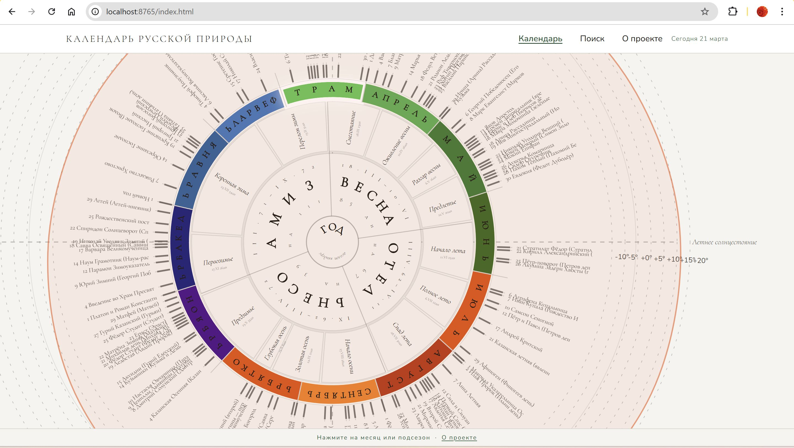
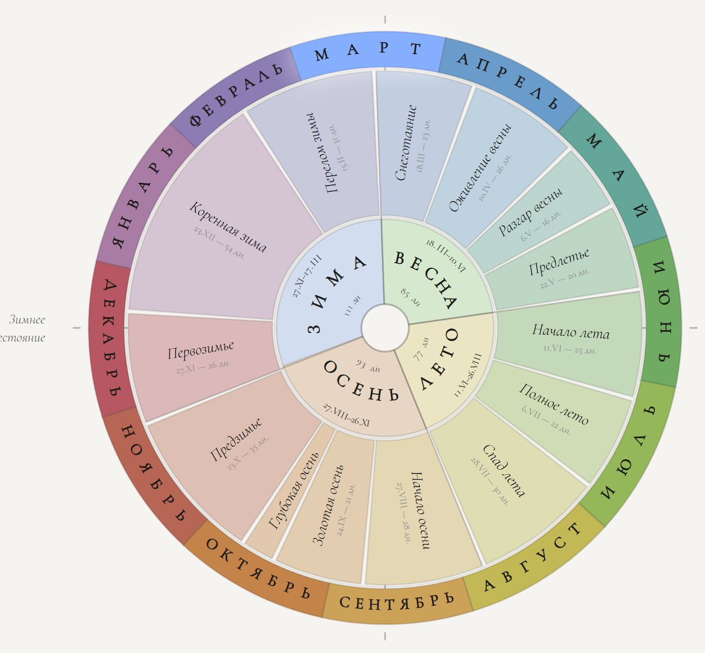

Что почитать
- Стрижев А.Н. Календарь русской природы. – М.: Московский рабочий, 1972. –rulit.me КРПуже в базе
- Стрижев А.Н. Рубрики «Народный календарь» и «Русское разнотравье» // Наука и жизнь. – 1966–1982. – (физические экземпляры в РГБ)
- Календарь русской природы на 1916 г. / Сост. А.Л. Бродский, П.А. Бельский и др. – М.: Природа, 1916. – 266 с.
Календарь русской природы. Кн. 1. – М., 1948. – 375 с. – Электронная библиотека РГО - Народный месяцеслов: Пословицы, поговорки, приметы, присловья о временах года и о погоде / Сост. и авт. ввод. текстов Г.Д. Рыженков; Вступ. ст. и словарь А.Н. Розова; Оформ. Т.М. Чирковой. – М.: Современник, 1992. – gumer.info НМуже в базе
- Круглый год. Русский земледельческий календарь / Сост. А.Ф. Некрылова. – 1991. – PDF
- Грошев В.Д. Календарь российского земледельца (народные обычаи и приметы). – М.: Изд-во МСХА, 1991. – PDF
- Лютин А.Т., Бондаренко Г.А. Народное наследие о приметах погоды: Календарь. – Саранск, 1993. – PDF
- Толстая С.М. Полесский народный календарь. – М., 2005. – PDF
- Дурасов Г.П. Каргопольские народные вышивки-месяцесловы // Советская этнография. – М.: Наука, 1978. – № 3. – PDF
- Русский месяцеслов // Википедия. – ru.wikipedia.org ВИКИуже в базе
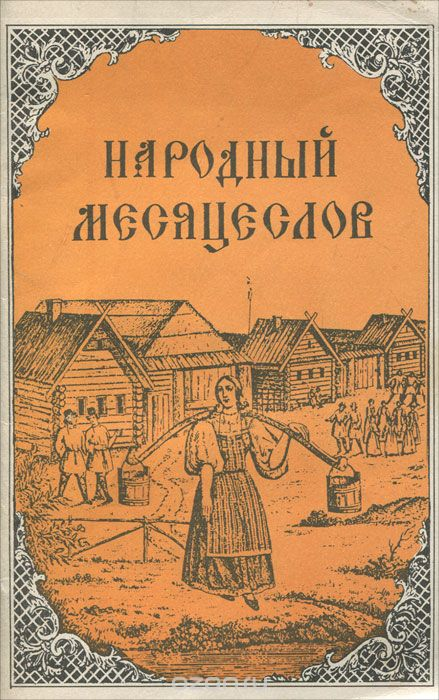
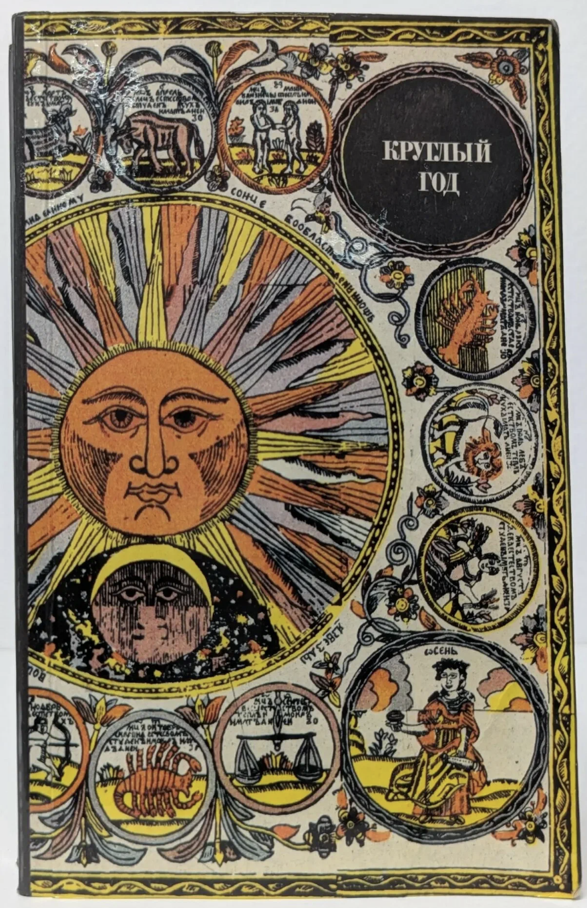
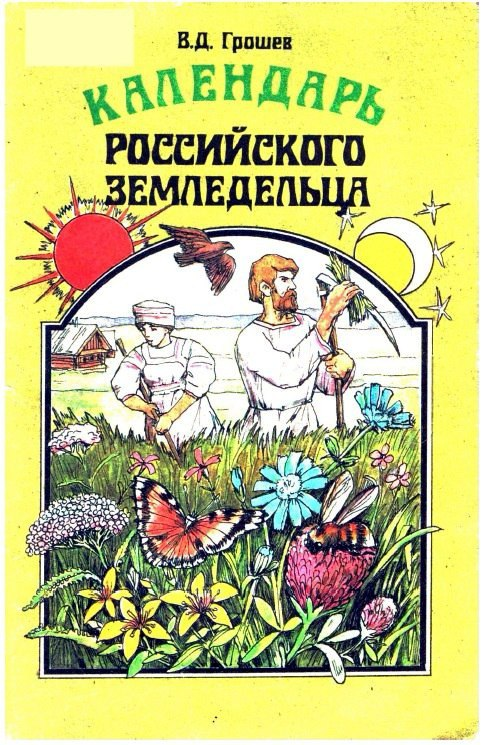
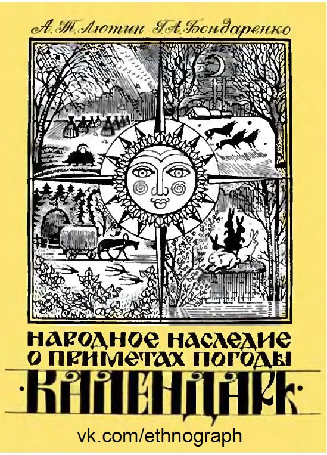
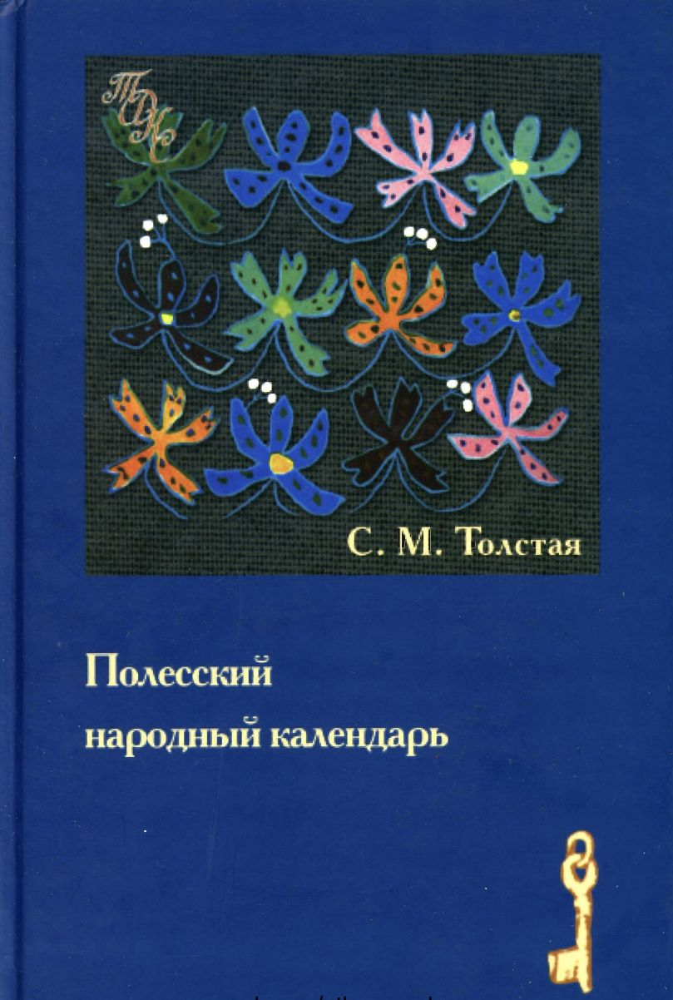